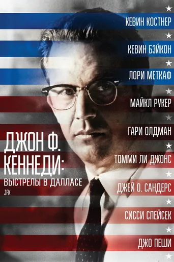

Джон Ф. Кеннеди: Выстрелы в Далласе 1991
1963-й год. Весь мир шокирован известием об убийстве президента США Джона Кеннеди в Далласе. Пока вице-президент Линдон Джонсон принимает в самолете присягу на верность американскому народу, полиция задерживает бывшего морского пехотинца Ли Харви Освальда. Именно ему в скором времени будет предъявлено обвинение в убийстве. Множество несоответствий и ошибок в проведении расследования, а также гибель 12 ключевых свидетелей, приведут к появлению новых версий убийства. Энергичный окружной прокурор Джим Гаррисон проводит собственное расследование, в ходе которого он смог ответить на вопрос: Кто убил президента Кеннеди?
Открыть в каталогеДанные и постеры принадлежат их правообладателям. Этот продукт использует TMDB API, но не одобрен и не сертифицирован TMDB.